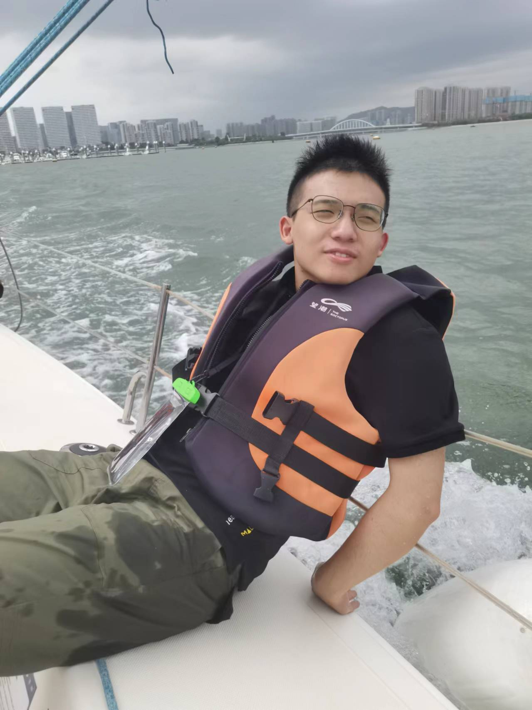

 |
Kaijie DuKaijie Du (杜楷劼)B.S. in Mathematics, Fudan University Ph.D. student, Tsinghua University 21300180048@m.fudan.edu.cn djj25@mails.tsinghua.edu.cn smiledkj@gmail.com Github OpenReview |
About Me
I am Kaijie Du, a Ph.D. student at Tsinghua University's School of Software, and previously an Applied Mathematics student at Fudan University's School of Mathematical Sciences. My research interests lie at the intersection of AI-empowered software engineering, security testing, and automated code generation. I am particularly passionate about Model-Driven Development (MDD) and exploring how large language models can revolutionize the software development lifecycle. My work focuses on leveraging AI to enhance code quality, automate vulnerability detection, and enable intelligent software evolution.Honors and Awards
View My Awards
News
Publications
| Papers
|
( show recent selected / show more ) |